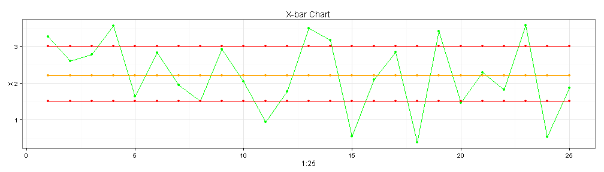
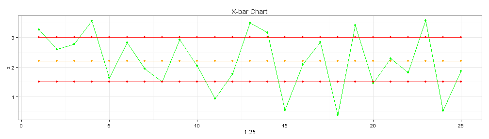

This application allow represent the process control for continuos variables, the available charts are: X-bar and Range Chart (x,r), X-bar and Standard deviation Chart (x,s) and individual movil range (imr) chart.

This application allow represent the process control for continuos variables, the available charts are: X-bar and Range Chart (x,r), X-bar and Standard deviation Chart (x,s) and individual movil range (imr) chart.

With this app the enterprise can do it the following:
1 Control the variation of the process
2 Determine the process capability
3 Establish the Cpk in the aggrements with the stakeholders
4 Control the behavior of the process for identify noise factors
5 Take actions for resolve the problems in the process
For use the statistical process control for continuos variables, you only need:
1 Insert the nominal value of the specification
2 Insert the lower specification limit
3 Insert the upper specification limit
4 Select the kind of chart, for subsamples >1 the (x,R) and (X,S) chart are available, for individual measures the IMR Chart is the unique option that display the graphic.
5 Upload the file with the subsamples
This app provide the simplest way for control the process of your company, furthermore, employees can used without any experience in programming, the only things that they need are the requierements presented above.
Likewise, this tool provide an agile response to the noise factors that impact your process with the goal of satisfy the customer requirements.